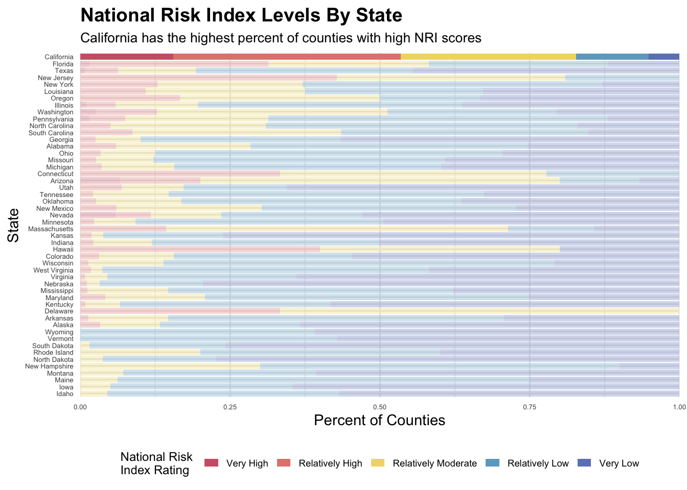
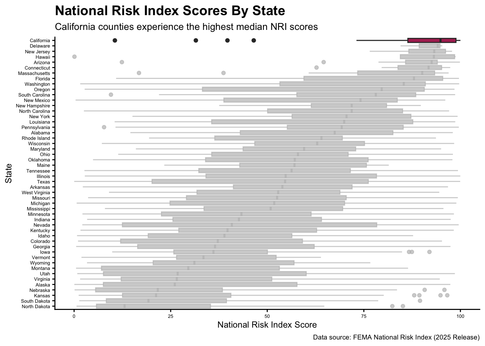

# Load packages
library(here)
library(tidyverse)
library(janitor)
library(gghighlight)HW #2
Visualizing FEMA NRI Data
Key Question: How do FEMA National Risk Index scores for counties in California compare to those in other states?
1. What are your variables of interest and what kinds of data (e.g. numeric, categorical, ordered, etc.) are they (a bullet point list is fine)?
- State name (
state_name): categorical variable - National Risk Index Composite (
national_risk_index_score_composite): continuous variable
2. How did you decide which type of graphic form was best suited for answering the question? What alternative graphic forms could you have used instead? Why did you settle on this particular graphic form?
I read the background information about the National Risk Index (NRI) to determine which variables would be most important in comparing the NRI scores for counties in California against other states, and then used the flow chart on the website from Data to Viz to narrow down my choices based on my data types. I was initially interested in a stacked bar plot of the categories of NRI scores by state (“Very High”, “Very Low”, etc.) as these are pre-categorized in the data and might be easier to interpret than numerical values, but later decided to stick with a boxplot with the scores themselves. The second boxplot was a less visually cluttered graph and was able to show statistics like the median and quartiles of each state.
Data loading and cleaning
# Read in data
nri <- read_csv(here("data", "National_Risk_Index_Counties_807384124455672111.csv")) %>%
clean_names() %>%
# Remove unwanted territories and districts
filter(!state_name %in% c("American Samoa", "Guam", "Northern Mariana Islands", "Puerto Rico", "Virgin Islands", "District of Columbia"))Data wrangling
As a preliminary plot, I want a count of how many counties in each state was categorized as each risk index level (“Very High”, “Relatively High”, etc.) in order to make a stacked bar chart.
# Create data frame with count of counties per index rating
state_labels <- nri %>%
group_by(state_name, national_risk_index_rating_composite) %>%
summarize(county_count = n()) %>%
# Make NRI into ordered factor
mutate(risk_category = factor(national_risk_index_rating_composite,
levels = c("Very Low", "Relatively Low",
"Relatively Moderate", "Relatively High", "Very High"))) %>%
ungroup() %>%
# Create column for ordering in plot
group_by(state_name) %>%
mutate(very_high_n = sum(county_count[risk_category %in% c("Very High", "Relatively High")], na.rm = TRUE)) %>%
ungroup() %>%
# Reorder state_name column by count of "Very High" and "Relatively High" counties
mutate(state_name = fct_reorder(state_name, very_high_n, .desc = FALSE))Plotting
Preliminary stacked bar plot
# Customize colors
rating_colors <- c("Very High" = "#D06274",
"Relatively High" = "#E2867E",
"Relatively Moderate" = "#F0D973",
"Relatively Low" = "#6DA9C9",
"Very Low" = "#6B84C2")
# Create stacked bar chart
ggplot(state_labels, aes(x = state_name, y = county_count, fill = risk_category)) +
geom_col(position = "fill") +
scale_fill_manual(values = rating_colors) +
# Relabel y-axis as percents
scale_y_continuous(labels = scales::label_percent(scale = 100)) +
coord_flip() +
guides(fill = guide_legend(reverse = TRUE)) +
# Emphasize California, keep other states at lower transparency
gghighlight(state_name == "California",
unhighlighted_params = list(fill = NULL, alpha = 0.3)) +
labs(x = "State",
y = "Percent of Counties",
fill = "National Risk \nIndex Rating",
title = "National Risk Index Levels By State",
subtitle = "California has the highest percent of counties with high NRI scores") +
scale_y_continuous(expand = c(0, 0)) +
# Edit theme
theme_minimal() +
theme(
axis.text = element_text(size = 5),
plot.title = element_text(face = "bold", size = 14),
plot.subtitle = element_text(size = 10),
# Move legend below plot
legend.text = element_text(size = 7),
legend.title = element_text(size = 9),
legend.position = "bottom",
legend.direction = "horizontal",
legend.key.width = unit(0.4, "cm"),
legend.key.height = unit(0.25, "cm"),
)Scale for y is already present.
Adding another scale for y, which will replace the existing scale.
Final boxplot
# Add caption and fig-alt!!
# Boxplot of NRI by state
ggplot(nri, aes(x = national_risk_index_score_composite, y = reorder(state_name, national_risk_index_score_composite, FUN = "median"), fill = state_name)) +
geom_boxplot() +
# Emphasize California
gghighlight(state_name == "California") +
scale_fill_manual(values = c("maroon")) +
labs(x = "National Risk Index Score",
y = "State",
title = "National Risk Index Scores By State",
subtitle = "California counties experience the highest median NRI scores",
caption = "Data source: FEMA National Risk Index (2025 Release)") +
# Edit theme
theme_classic() +
theme(
axis.text = element_text(size = 5),
axis.title = element_text(size = 9),
legend.position = "none",
plot.title = element_text(face = "bold", size = 14),
plot.subtitle = element_text(size = 10),
plot.caption = element_text(size = 7)
)
3. Summarize your main finding in no more than two sentences.
California had the highest percentage of counties with very high and relatively high risk scores.
4. What modifications did you make to this visualization to make it more easily readable?
Color picker, reordered variables, edited axes, used gghighlight to focus on california but kept other colorings at a lower transparency for comparison
5. Is there anything you wanted to implement, but didn’t know how? If so, please describe.
The bar plots did not seem to provide enough distinguishable information about California’s risk score compared to other states.